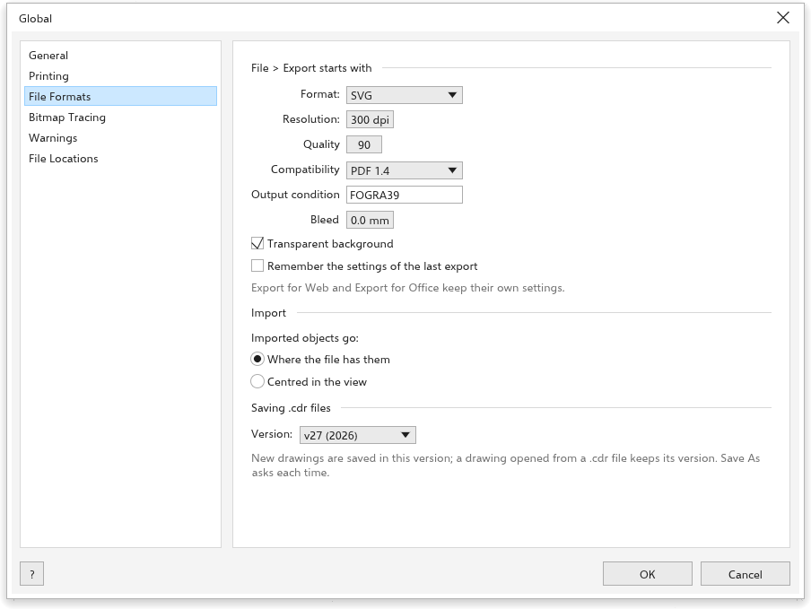
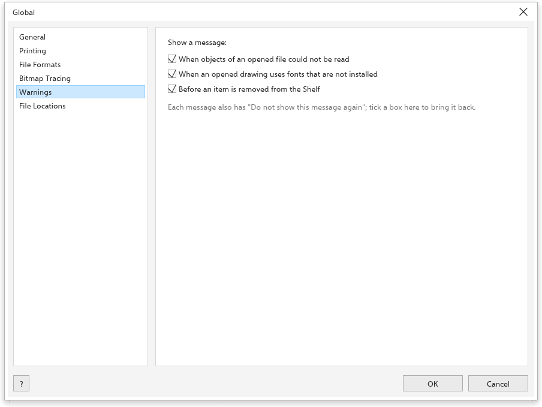
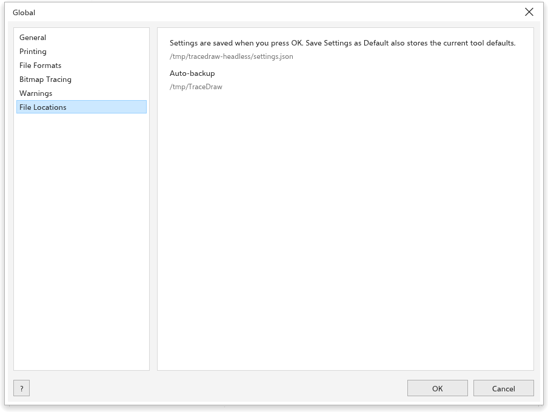

Opções globais
Ferramentas > Opções > Global reúne as configurações que valem para o programa inteiro: idioma, padrões de impressão e exportação, vetorização, mensagens e onde os arquivos ficam.
Geral

- Idioma: o idioma da interface. Esta Ajuda abre no mesmo idioma.
- Procurar atualizações ao iniciar (ligado): veja Procurar atualizações.
- Agentes de IA: Deixar agentes de IA deste computador editarem o desenho aberto (MCP) deixa assistentes de IA neste computador editarem o desenho aberto; veja Scripts.
- Restaurar todas as configurações: veja Redefinir configurações.
Impressão

A caixa Imprimir começa com: Ajustar à página, Imprimir separações (C, M, Y, K), Sangria, Marcas de corte, Marcas de registro, Barras de cor, Escala densitométrica, Informações da página (todos desligados), a Folha, Paisagem e o Espaço entre páginas (5 mm). Lembrar as configurações da última impressão guarda as escolhas da última impressão. Em Verificações, Verificar o desenho na caixa Imprimir (preflight) (ligado). Veja Imprimir um desenho.
Formatos de arquivo

- Arquivo > Exportar começa com: o Formato (SVG), a Resolução dos formatos de bitmap (300 dpi), a Qualidade de JPEG e WebP (90), Fundo transparente (ligado), o Compatibilidade, a Condição de saída e a Sangria. Lembrar as configurações da última exportação guarda as escolhas da última exportação.
- Importar: Os objetos importados ficam Onde estão no arquivo (de início) ou Centralizados na vista.
- Salvar arquivos .cdr: a Versão em que os desenhos novos são salvos como
.cdr.
Vetorização de bitmaps

O Rastreamento rápido usa uma das predefinições (Clipart de início). Todo rastreamento começa com Remover fundo (ligado) e Excluir imagem original (desligado). Veja Vetorizar bitmaps.
Avisos

Mostrar uma mensagem Quando objetos de um arquivo aberto não puderem ser lidos, Quando um desenho aberto usar fontes que não estão instaladas e Antes de remover um item da prateleira (todos ligados). Cada mensagem também tem uma caixa que a desativa; marque a opção aqui para voltar a vê-la.
Ask which installed font draws each missing one (the Missing Fonts dialog) (ligado) mostra a caixa de diálogo Fontes ausentes quando um desenho abre com fontes que não estão instaladas; veja Fontes ausentes. É separado da mensagem simples acima.
Locais de arquivos

Mostra onde ficam as preferências e as cópias de segurança automáticas. As preferências ficam em uma pasta tracedraw-settings ao lado do programa quando ela existe (uma cópia portátil), senão no lugar do sistema para configurações de programas; a versão para navegador as guarda no navegador.